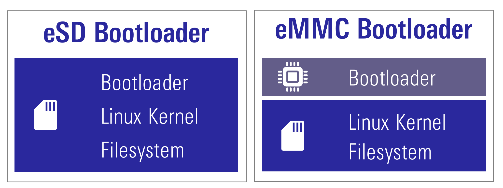
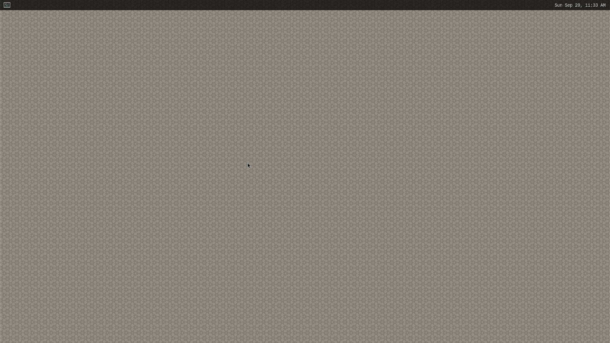

Following items are included in the RZ/V2L Evaluation Board Kit.
Equipment
Details
RZ/V2L Evaluation Board
Evaluation board itself.
MIPI Camera Module
Google Coral Camera.
Note that the CMOS sensor (OV5645) in the camera is no longer available, and should not be used for mass production. Any software support provided is for evaluation purposes only.
MicroUSB to Serial Cable
For serial communication between PC and the board.
Step 2: Obtain necessary environment
1. Necessary Equipments
In addition to the RZ/V2L Evaluation Board Kit, please prepare the following equipments.
NoteSerial to MicroUSB Cable and MIPI Camera Module (Google Coral camera) is included in RZ/V2L Evaluation Board Kit.
Equipment
Details
HDMI Monitor
Used to display the graphics.
Micro HDMI Cable
Used to connect the HDMI Monitor and the board.
AC adapter
Power supply to the board.
USB Cable Type-C
Connect AC adapter and the board.
microSD card
Must have over 4GB capacity of blank space. Operating Environment: Transcend USH-I microSD 300S 16GB
Linux PC
Used for Setup microSD card and RZ/V2L AI SDK Setup.
Operating Environment: Ubuntu 20.04
SD card reader
Used for setting up microSD card.
Windows PC
Optional. Used as the serial communication console for eMMC Bootloader.
Operating Environment : Windows 10
Create new directory to be mounted on Docker container.
mkdir${WORK}/ai_sdk_setup/data
Create docker container. Here, rzv2l_ai_sdk_container is a name of docker container, which can be changed by user.
docker run -it--name rzv2l_ai_sdk_container -v$(pwd)/data:/drp-ai_tvm/data rzv2l_ai_sdk_image
The local $(pwd)/data is mounted to /drp-ai_tvm/data on the Docker container by the above command option.
For example, you can use this directory to copy files created on the Docker container to your local environment.
In docker container, run the following command to copy libtvm_runtime.so, which is the necessary file for the board, to host machine.
To start the docker container rzv2l_ai_sdk_container again, run the following command.
docker start -i rzv2l_ai_sdk_container
You have finished the RZ/V2L AI SDK environment setup.
You are ready to build the AI applications!
Step 6: Build RZ/V2L AI Application
This step explains how to build AI application.
AI Applications are provided in the GitHub repository.
To access the application, please see AI Applications.
Application directory has the following structure.
Directory
Details
exe
Execution environment required when running application on the board.
src
Application Source Code.
Other directory
Optional: Extra files that may be required other than above.
Makefile
Optional: Configuration to build the application. It may be included in the src directory.
README.md
Optional: Documentation of the application.
Note
Following procedures are for users who would like to build the application from the source code.
If you would like to run the application as quickly as possible, you can skip this step and proceed to the next step (Step 7: Deploy RZ/V2L AI Application) since pre-build application binary is provided.
This repository does not provide instructions for RZ/V2L AI SDK.
Option 1. For <Application 1>
Check the README.md document provided in application directory and follow the instruction in the chapter called "Application: Build Stage" (or similar) to build the application.
Example:
In Object Detection application, follow the instruction here to generate the following application binary.
object_detection
After you generated the application binary, please proceed to Step 7
Option 2. For <Application 2>
Follow the instruction bellow to build the application.
Run (or start) docker container.
Example:
Run the following command to start the docker container created in Step 5.
docker start -i rzv2l_ai_sdk_container
Change the environment variable to use the cross compiler.
Note
The file configuration depends on each application. Please check the file configuration in the repository carefully.
Build the application with make command.
make
Check that following application is generated in the RZV2L_AiLibrary/01_Head_count/ Head_count_cam/exe.
head_count_cam_app
If you would like to build the other applications in Option 1, please exit and restart the docker container.
After you generated the application binary, please proceed to Step 7
Step 7: Deploy RZ/V2L AI Application
This section explains how to deploy the AI Application to the RZ/V2L Evaluation Board Kit.
To boot the board, bootloader and other Linux necessary files are required.
There are two types of bootloader available on RZ/V2L AI SDK.
eSD Bootloader: The board boots up using the bootloader written on microSD card.
eMMC Bootloader: The board boots up using the bootloader written in eMMC on the board.
Other necessary files, i.e. Linux kernel and root filesystem, are stored on microSD card.
You can use Linux PC to format the microSD card and expand the kernel and the root filesystem using SD card reader.

Preparation
Click the button
This step contains both eSD and eMMC Bootloader explanation.
Please click the button below to update the explanation according to your bootloader interface.
eSD BootloadereMMC Bootloader
For eSD
eSD explanation will be shown in this style if you click "eSD Bootloader" button above.
For eMMC
eMMC explanation will be shown in this style if you click "eMMC Bootloader" button above.
1. Setup RZ/V2L Evaluation Board Kit
For eSD
microSD card contains bootloaders, the Linux kernel and root filesystem to boot-up the board.
You can use Linux PC to format the microSD card and expand the kernel and the root filesystem using SD card reader.
Note
This step is required only when starting the AI SDK or when using the new version of AI SDK.
If you have already setup the microSD card with the latest bootloader, Linux kernel, Linux device tree file and root filesystem, skip this step and proceed to the next procedure (2. Deploy Application to the Board).
For eMMC
microSD card contains the Linux kernel and root filesystem to boot-up the board.
You can use Linux PC to format the microSD card and expand the kernel and the root filesystem using SD card reader.
Bootloaders must be written in eMMC on the board.
You can use Windows PC to write the bootloaders on eMMC.
Note
This step is required only when starting the AI SDK or when using the new version of AI SDK.
If you have already setup the microSD card and the bootloader written in eMMC on the board, skip this step and proceed to the next procedure (2. Deploy Application to the Board).
Warning
Change /dev/sdb to your microSD card device name.
Run the following commands to setup the partition 2, which is the root filesystem of the board.
sudo mount /dev/sdb2 /mnt/sd
sudo tar xfj $WORK/board_setup/eSD/core-image-weston-smarc-rzv2l.tar.bz2 -C /mnt/sd
sudo cp$WORK/ai_sdk_setup/data/libtvm_runtime.so /mnt/sd/usr/lib64
sync
sudo umount /mnt/sd
Warning
Change /dev/sdb to your microSD card device name.
For eMMC
Following three files are necessary, which must be placed on each partitions on microSD card.
They are in the ${WORK}/board_setup/eMMC directory.
File
Description
microSD card partition
Image-smarc-rzv2l.bin
Linux kernel image (The boot program)
Partition 1
Image-r9a07g054l2-smarc.dtb
Linux device tree file (The configuration file for booting)
Partition 1
core-image-weston-smarc-rzv2l.tar.bz2
Linux Root filesystem
Partition 2
Run the below command to decompress ${WORK}/board_setup/eMMC.zip.
cd${WORK}/board_setup
unzip eMMC.zip
Insert the microSD card to Linux PC.
Check if the two partitions are created successfully by running df command.
df-h
Filesystem Size Used Avail Use % Mounted on
… … … … … …
/dev/sdb1 … … … … …
/dev/sdb2 … … … … …
Warning
Device name of microSD card, /dev/sdb, may differ depending on your environment.
Run the following commands to setup the partition 1.
Warning
Change /dev/sdb, to your microSD card device name.
Run the following commands to setup the partition 2, which is the root filesystem of the board.
sudo mount /dev/sdb2 /mnt/sd
sudo tar xfj $WORK/board_setup/eMMC/core-image-weston-smarc-rzv2l.tar.bz2 -C /mnt/sd
sudo cp$WORK/ai_sdk_setup/data/libtvm_runtime.so /mnt/sd/usr/lib64
sync
sudo umount /mnt/sd
Warning
Change /dev/sdb, to your microSD card device name.
Note
If you would like to eject the microSD card, please run following command and remove the microSD card from Linux PC.
sudo eject /dev/sdb
Warning
Change /dev/sdb to your microSD card device name.
Write the bootloaders to SD card
Write the bootloaders to eMMC
For eSD
Before booting up the board, you must write the latest bootloaders to microSD card.
This procedures needs to be done only once as long as you use the same version of AI SDK.
There are three files in ${WORK}/board_setup/eSD/bootloader to boot up the board.
bl2_bp_esd-smarc-rzv2l_pmic.bin
bl2_bp-smarc-rzv2l_pmic.srec
fip-smarc-rzv2l_pmic.srec
Run the following commands to write these files to the microSD card to boot for eSD.
Run the following command to mount the partition 2, which contains the root filesystem.
sudo mount /dev/sdb2 /mnt/sd
Warning
Change /dev/sdb to your microSD card device name.
Create the application directory on root filesystem.
sudo mkdir /mnt/sd/home/root/tvm
Note
Directory name tvm can be determined by user.
Copy the necessary files in execution environment.
Select the appropriate option below based on the application type explained in Building instructions in Step 6.
Option 1. <Application 1>
Check the README.md document provided in application directory and follow the instruction in the chapter called "Application: Deploy Stage" (or similar) to deploy the application.
Example:
In Object Detection application, follow the instruction in here to find files to be copied.
Use the following command to copy the files to root filesystem.
sudo cp$WORK/ai_sdk_setup/data/<Path to target file>/<filename> /mnt/sd/home/root/tvm
Option 2. <Application 2>
Run the following command to copy the whole repository to the root filesystem.
sudo cp$WORK/ai_sdk_setup/data/<Path to repository>/RZV2L_AiLibrary /mnt/sd/home/root/tvm -r
Run the following command to sync the data with memory.
sync
Run the following command to unmount the partition 2.
sudo umount /mnt/sd
Eject the microSD card by running the following command and remove the microSD card from Linux PC.
sudo eject /dev/sdb
Warning
Change /dev/sdb to your microSD card device name.
3. Boot RZ/V2L Evaluation Board Kit
This section explains how to boot the RZ/V2L Evaluation Board Kit.
eSD BootloadereMMC Bootloader
Follow the instruction below to boot the board.
For eSD
Insert the microSD card to the Board.
Note
Use the microSD card slot CN3 as shown in the figure.
Change SW1 and SW11 setting as shown in the figure.
Connect the USB mouse and USB keyboard via USB hub.
Connect the Google Coral camera to the Board.
Connect the HDMI monitor to the Board.
Connect the power cable to the Board.
Press power button for 1 second to turn on the board.
After the boot-up, following screen will be displayed on HDMI monitor.

Click the icon at the top-left corner to open the terminal.
For eMMC
Note
After bootloader is written and U-boot setting is changed, terminal emulator is no longer needed.
Users can detach the serial port connection.
Insert the microSD card to the Board.
Note
Use the microSD card slot CN10 as shown in the figure.
Change SW1 and SW11 setting as shown in the figure.
Connect the USB mouse and USB keyboard via USB hub.
Connect the Google Coral camera to the Board.
Connect the HDMI monitor to the Board.
Connect the power cable to the Board.
Press power button for 1 second to turn on the board.
After the boot-up, following screen will be displayed on HDMI monitor.
Click the icon at the top-left corner to open the terminal.
Step 8: Run RZ/V2L AI Application
Document of applications on GitHub has the instructions to run the application.
Example:
For Object Detection application, follow the instruction here to run the application.
If you have successfully run the application, you will see following window on HDMI screen.
You have experienced the AI Application development procedures.
Next step is to change the application to create your own AI Application.
You can use the applications listed in AI Applications to expand your ideas!